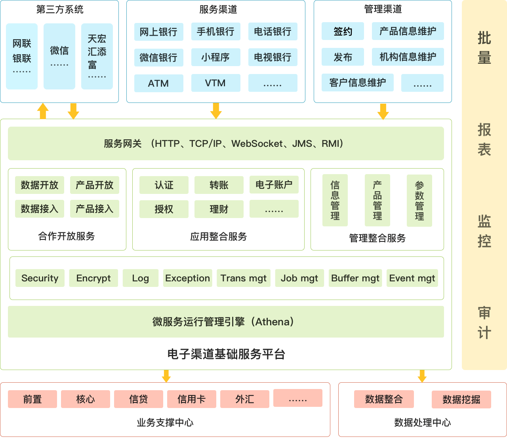

伴随互联网的迅猛发展，网上银行逐渐成为利润中心，其重要性日益凸显，成为银行吸引客户、提升金融服务水平的重要手段。通过对银行金融互联网系统调研，我们发现很多银行的网上银行、手机银行、微信银行、网上支付等系统规划不足、前瞻不够，存在如下问题：
数据孤岛问题 规则分散问题
渠道孤立问题 平台落后问题
管理分散问题 风控欠缺问题
黏性不足问题 创新乏力问题
云核网上银行建设方案，从渠道整合的高度进行规划，解决了上述问题，方案业务层由“电子渠道基础服务平台”实现。“电子渠道基础服务平台”是一个分布式微服务平台，包含了应用整合、管理整合、合作开放等类型的众多微服务。合作开放服务包括数据开放类服务、产品开放类服务、数据接入类服务、产品接入类服务等；应用整合服务包括流程控制类服务、限额控制类服务、费用控制类服务、授权类服务、交易处理类服务、通讯路由类服务等；管理整合服务包括统一签约类服务、合作伙伴管理类服务、安全介质管理类服务、实时监控类服务、报表类服务等。
图表 1电子渠道基础服务平台

系统特点
专业UX设计
专业UX设计，UI、流程精雕细琢，实现高颜值好体验。
业务功能全覆盖
提供统一签约管理、统一渠道管理、统一证书管理、统一客户管理、统一产品管理、统一营销管理、统一交易处理、统一数据模型、统一平台管理，个人业务、对公业务一网打尽。
分布式微服务架构
可扩展的分布服务架构，全异步、组件化、松耦合、去中心、灵活独立，以满足互联网服务对低延迟、高并发的要求。
自动化测试
系统采用迭代开发模式，敏捷协作，同步开发测试用例，通过采用开源技术的自动化测试平台进行自动化单元测试的集成，简化测试流程，提升测试效率。
基于容器的持续部署
提供基于Kubernetes、Docker及其他开源技术的自动代码检查，自动单元、集成测试，自动打包、部署的持续集成与持续交付。
敏捷开发
通过自动化单元测试、自动化打包构建、自动化发布、自动化部署，形成自动化敏捷体系。通过持续交付工作流程，敏捷团队可以快速从CI/CD流水线上得到反馈，从而实现高度自动化的服务发布。
DevOps支持
提供DevOps解决方案，通过自动伸缩、A/B Test、灰度发布、滚动升级、失败回滚等，实现持续部署、持续运营、持续反馈。
客户案例
昆山农商银行渠道整合系统、个人网银、个人手机银行、微信银行、企业网银、企业手机银行；
晋城银行渠道整合系统、个人网银、个人手机银行、微信银行、微信小程序、企业网银；
鄞州银行个人手机银行、企业网银、企业手机银行等。
图表 2昆山农商银行个人网上银行